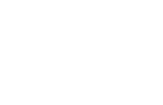
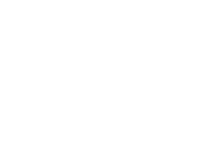
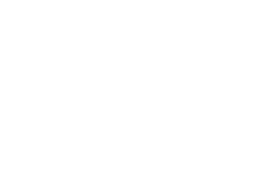

CRUISER
Si bien la mayoría de las tablas de nuestra línea son capaces de navegar, una tabla designada como crucero suele ser un poco más corta que una tabla corta estándar con una punta más corta, una forma más direccional y ruedas suaves. La mayoría de estas tablas se construyen a partir de moldes regulares de tablas cortas y son capaces de patinar en una variedad de terrenos, incluidos parques, pero también pueden cruzar un paseo marítimo.
Leer másCARVING
Si le gustan las tablas que mantienen bien su línea en los giros y no se deslizan mucho, esté atento a esta designación. Eso no significa que no se deslizarán en absoluto, sino que, por lo general, están configurados con ruedas con bordes que se agarran mejor mientras mantienen la velocidad. Todos nuestros modelos completos con ejes Gullwing Sidewinder II se consideran tablas de Carving, pero este estilo de conducción tampoco es exclusivo de ellos.
Leer más DOWNHILL
Las tablas con la designación Downhill están diseñadas para bajar por grandes colinas o pasos de montaña. Esto no significa que tenga una licencia automática para cargar por estas colinas, sino que la tabla puede manejarlo si tiene la capacidad. Las tablas de descenso suelen tener moldes más complejos, construcciones únicas y hardware y componentes de primera calidad. Siempre patine dentro de sus propias capacidades y use un casco.
Leer más 
